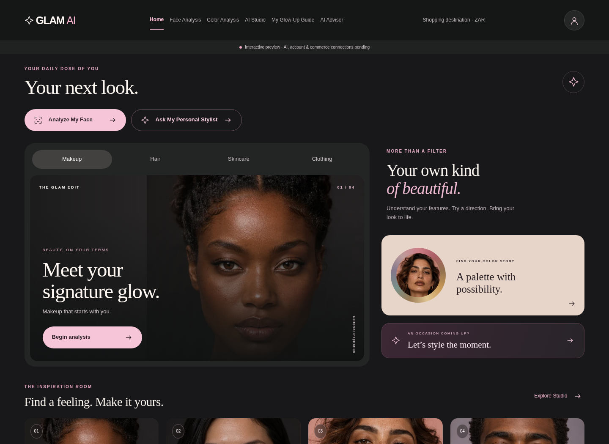
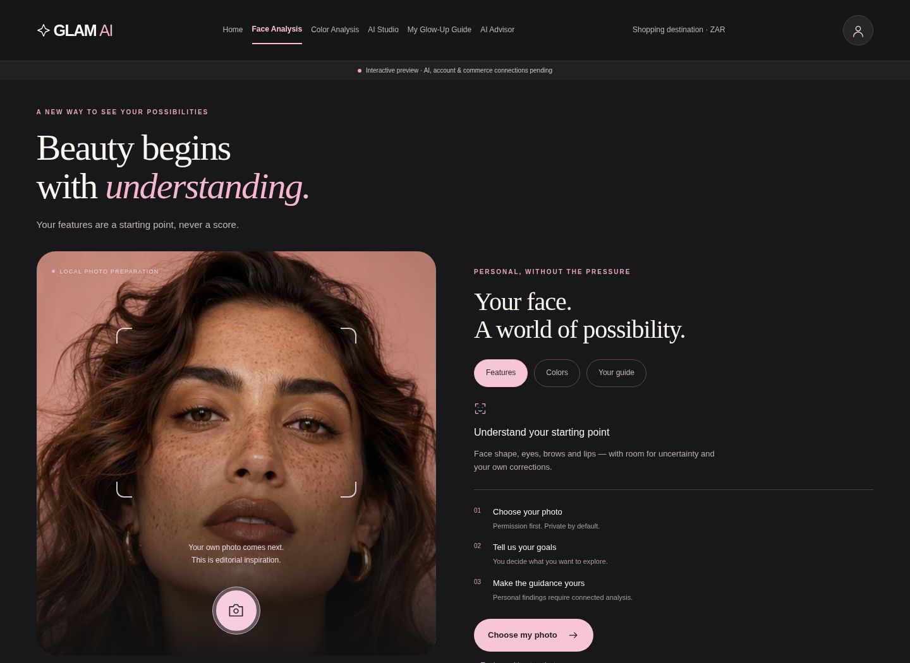
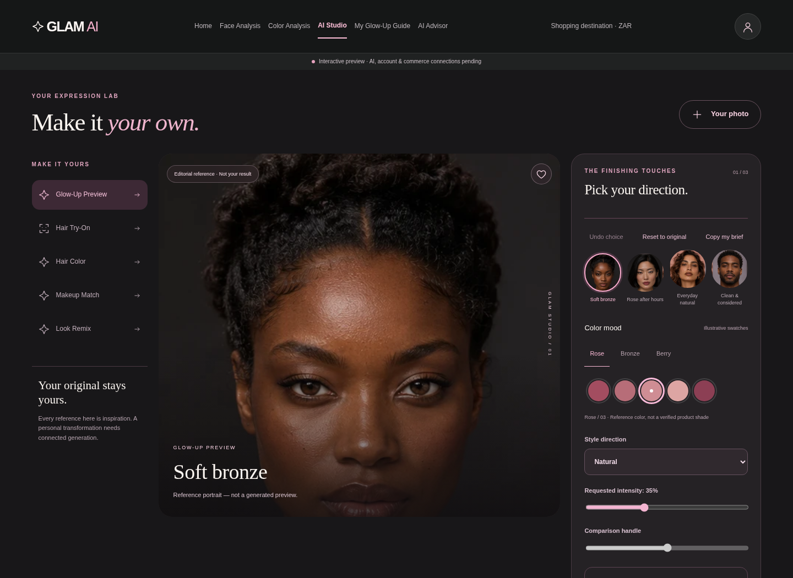
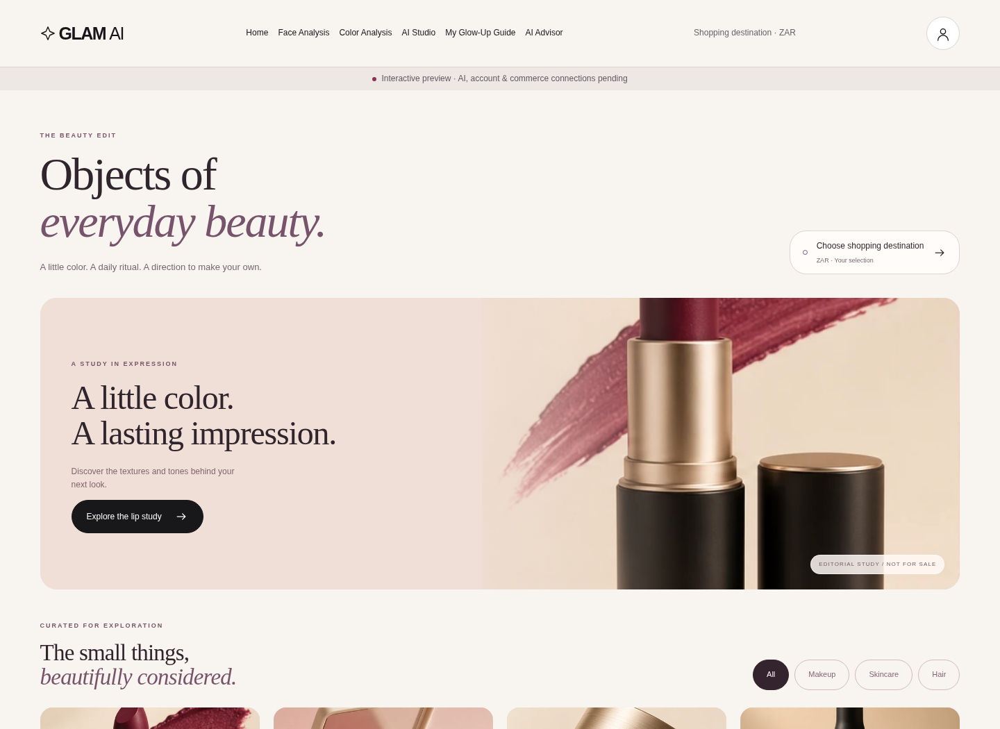
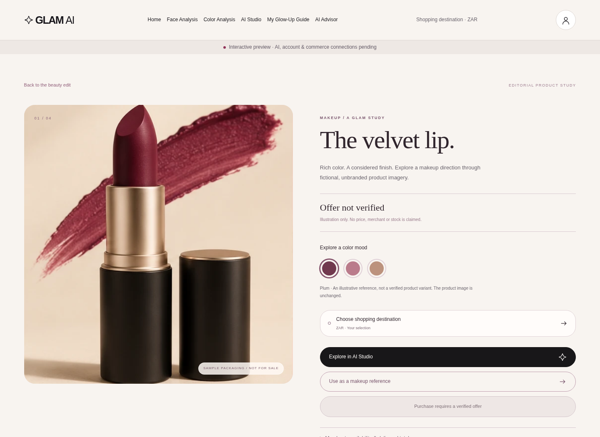
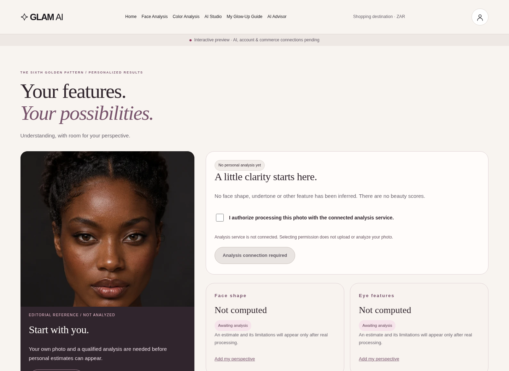

02 / Face Analysis
PHOTO PREPARATION, NOT AN ACTIVE SCAN
03 / AI Studio
ACTUAL INTERACTIVE UI
04 / Shop
EDITORIAL PRODUCT STUDY
05 / Product Detail
EDITORIAL PRODUCT STUDY
Desktop captures of the actual responsive application. Native device appearance remains unverified.





